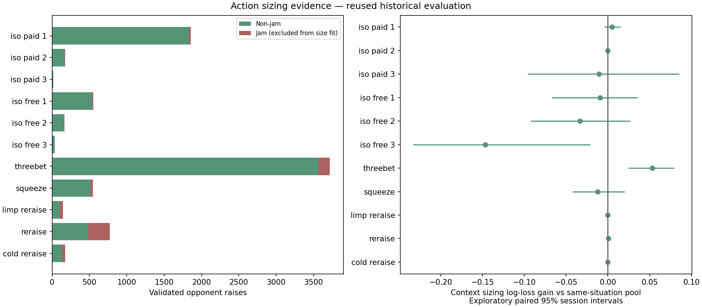
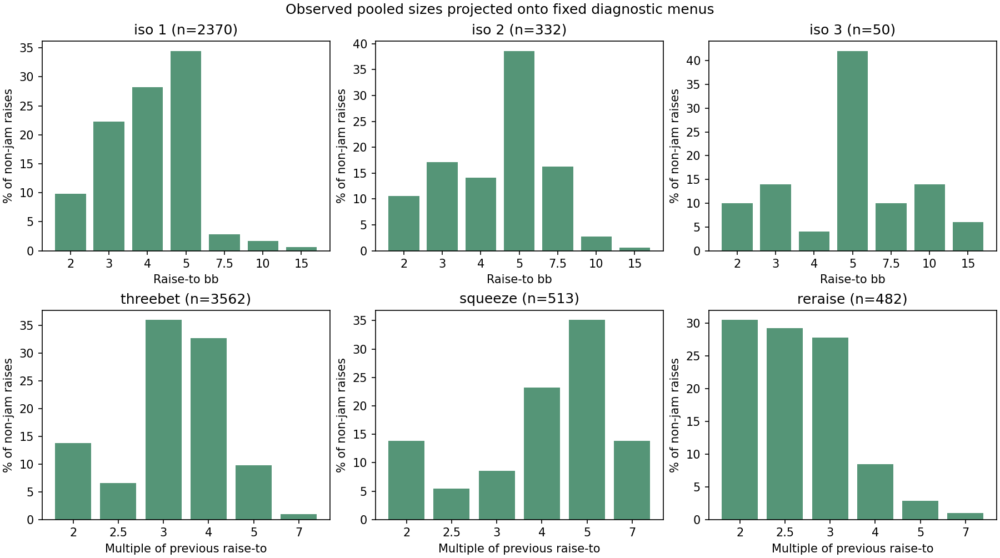

Ignition NL10 regular · 7,545 non-jam raises · 610 jams kept separate · retrospective validation
Learned iso raise-to amounts and re-raise multipliers project onto the scenario’s non-jam menu. Every hand-action probability and existing opening mixture is preserved.
Ordinary 3-bet positional sizing improves diagnostic loss 3.8% on 698 later raises. Other supported situations use observed pools; sparse contexts disclose borrowed evidence.
Methods and limitations · All results · Frozen protocol · Preservation checks

Size depends on situation and supported position, not the particular hand. New sites, table formats and hand-dependent sizing remain unvalidated. The research exporter creates a separate candidate library and does not replace live sessions.